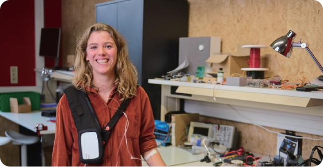
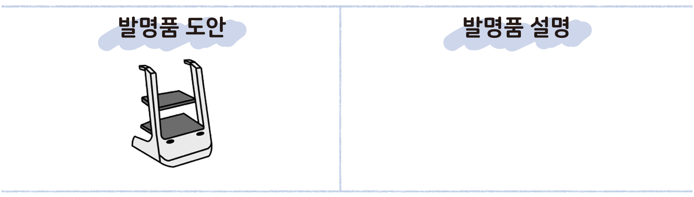

활동하기 도덕적 상상력으로 만들어 낸 발명품
활동하기 우리 주변에서 여러 사람이 불편함을 느끼는 사례를 찾아보고, 이를 해결할 수 있는 발명품을 제시해 보자.
 벨기에 출신의 샬럿 블랑케는 어머니 직장 동료의 자녀가 집에서 사용하는 수액 걸이가 불편해 옷걸이를 수액 걸이로 사용한다는 이야기를 전해 듣고 ‘아이비(Ivvy)’를 개발하였다. 샬럿은 최근 재택 치료를 받는 환자의 수가 늘어나고 있지만, 가정용 수액 걸이가 복잡한 병원용 수액 걸이와 같다는 사실을 깨달았다. 따라서 환자가 집에서 더욱 편리하게 생활 할 수 있도록 착용 가능한 형태로 수액 걸이를 만들었다. 또한 간호사가 환자의 상태를 살펴볼 수 있는 소프트웨어를 탑재해 원격으로 수액 주사 주입량을 설정할 수 있도록 설계하였다.
- 『동아일보』, 2022. 11. 23.
1 나와 내 주변 여러 사람이 일상생활에서 겪는 어려움에는 무엇이 있는지 모둠원과 이야기해 보자.
같은 반 친구인 정민이가 다리를 다쳐 목발을 짚고 다녔을 때 급식실에서 식판을 들 수 없어 불편해했다.
2 위에서 이야기한 문제 상황에서 많은 사람은 어떤 감정을 느낄지 생각해 보자.
세심하고 다른 사람에게 피해를 주는 것을 싫어하는 정민이는 점심시간마다 도와줄 친구를 찾느라 부담스럽고 힘들었을 것 같다. 또한 도와주는 친구가 있어도 계속 미안한 마음이 들었을 것 같다.
3 문제 상황을 해결하기 위한 발명품을 모둠원과 함께 구체적으로 구상해 보자.

정답
목발과 연결된 홈이 있어 사람의 걸음에 맞춰 따라오는 식판 끌개이다.